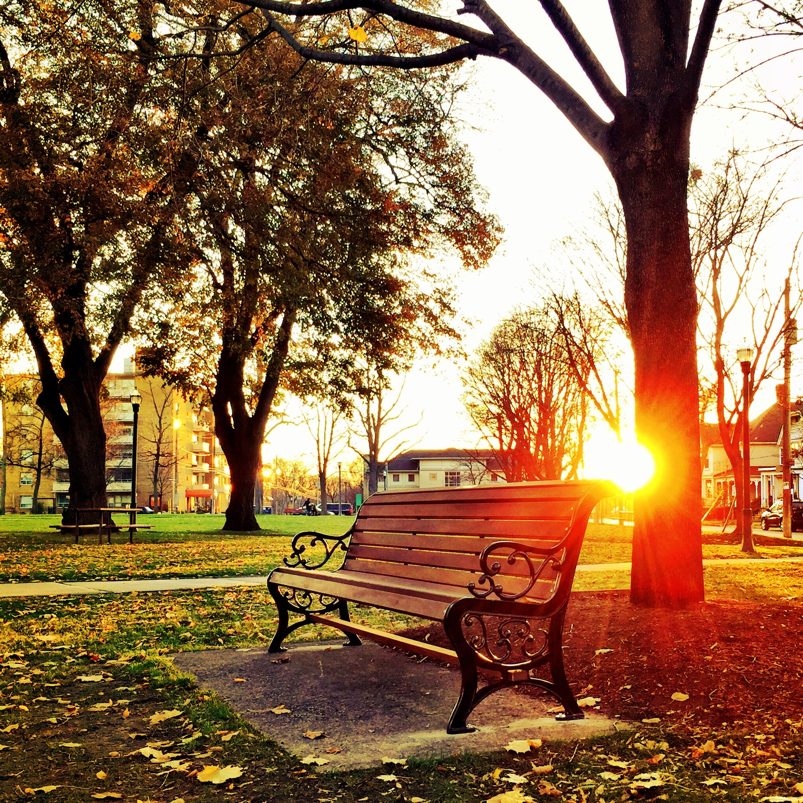

Here I have collected 4 of the best date ideas for couples (or dating pairs if you haven't taken the step yet!) who are searching for fun. Half of these options allow for entertainment within the comfort of your own home, while the others request that you and your counterpart go explore out in your neighborhood or nearby cities. Nonetheless, all serve to provide you both a wonderful experience, and don't be afraid to add your own little spin to my ideas.


One of the best experiences I've had is watching movies with a special someone. I've always had a list of movies or series I wanted to watch, but never found the time to watch it or I preferred to watch with someone. Putting a night together towards a movie you both want to watch can be fun. Not only does it allow you to stay in the comfort of your home, but it is very cost efficient as well (as long as you have some streaming service where you can watch movies). Before settling on your couch, go to your local supermarket or corner-store and pick up some snacks for the both of you to enjoy. As everybody knows, popcorn is a movie favorite, so make sure to add that to your shopping list. Finally, grab a blanket, and cuddle away as you enjoy the experience.
Some people might say picnics are outdated, but I find it to be a very intimate experience because of how immersed it is in nature. It is the perfect time for you and your partner to create your own fruit bowl, craft your favorite sandwiches or sliders, and … paint! Not only are parks filled with nature's beautiful structures, but they provide the perfect aesthetic for a painting date. You can even paint portraits of each other, and it might be equally or more fun to make them silly. Go to your local arts and craft shop and buy two small canvases with some paint and brushes. Sometimes you can find kits bundled with all the resources you may need. Buy your picnic snacks and find a nice, relaxing spot at your local park for your sweet memory to be born.
Home-baked goods always bring an inner warm feeling, or maybe that's because they're served straight out the oven. Nonetheless, making your own baked treats is always a great experience. Whether you're experienced or new, baking doesn't require much skill to get started. If you're more familiar with baking and have the skills to impress, you can find a recipe for a treat you both enjoy or want to try. Now, if you're a beginner, don't worry! Simple baking mixes are available at your local supermarket, and they still provide great tasting treats. I strongly recommend Betty Crocker's Chocolate Chip Mix as it's always worked out great for me. Finally, once your baked goods are ready to eat, enjoy while you both spend the rest of the night reminiscing about the silly mistakes and mess-ups that happened in the process.
While nature's structures are very beautiful, human's structures can be as visually pleasing. Wherever you may live, try to find a nearby city with a nice downtown for walking. Cities usually have strip districts filled with shops and restaurants, so plan your path efficiently and make a reservation for the cuisine of your delight. It's important to reserve ahead of time if the downtown of your choice happens to be a big city like NYC or Los Angeles. Downtowns may also have small markets set up, especially during the holiday season, so make sure to plan for such dates. And for a little heads-up, be ready to spend if you or your partner love to shop or eat. Downtowns tend to have snack shops at every corner. I recommend visiting the downtown of your choice late-afternoon, so you can witness the sky dim and city lights brighten and watch the streets liven up with people looking for the same fun as the both of you.